Saga del Emperador Pilaf
Goku conoce a Bulma y comienza la busqueda de las esferas del dragon, enfrentando por primera vez al ambicioso Emperador Pilaf.
Ver masDescubre el origen, evoluci贸n y sagas de nuestro universo.

Goku conoce a Bulma y comienza la busqueda de las esferas del dragon, enfrentando por primera vez al ambicioso Emperador Pilaf.
Ver mas
Goku y Krillin entrenan con el Maestro Roshi y participan en su primer gran torneo, enfrentando poderosos rivales como Jackie Chun.
Ver mas
Goku se enfrenta a la organizacion del Ejercito Red Ribbon, que busca las esferas del dragon para conquistar el mundo.
Ver mas
Goku y sus amigos participan en un torneo organizado por la misteriosa Uranai Baba, donde deben enfrentarse a poderosos adversarios.
Ver mas
Goku y sus amigos se preparan para el 22 Torneo de Artes Marciales, donde nuevos y viejos rivales se enfrentaran en combates epicos.
Ver mas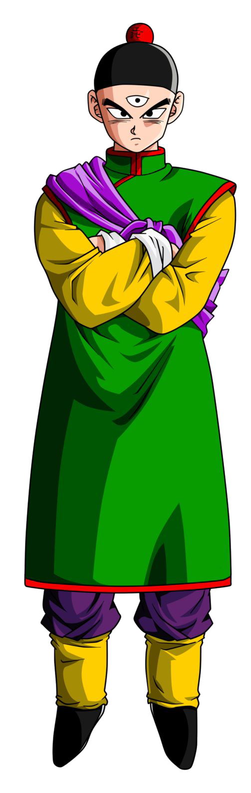
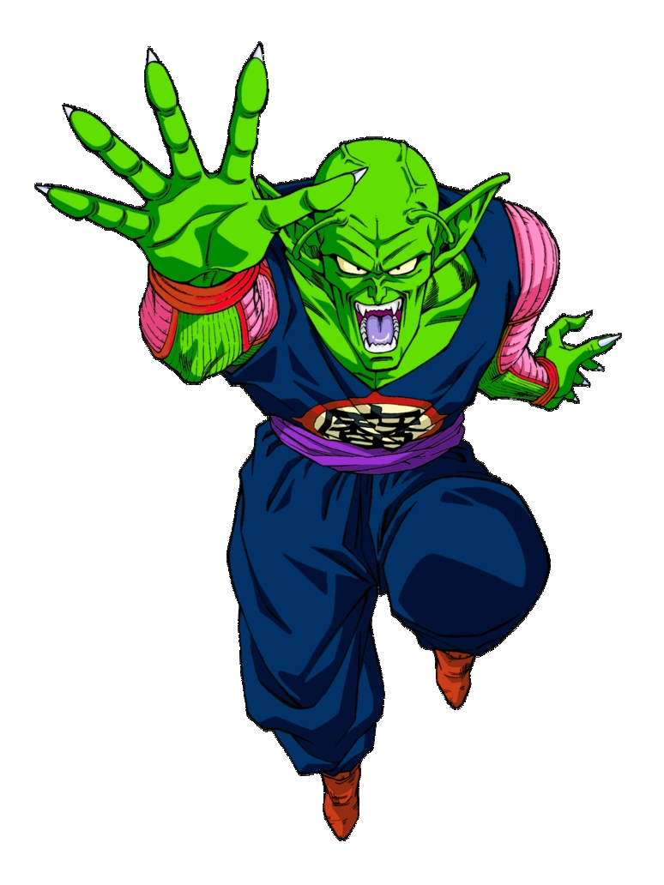

Goku se enfrenta a Piccolo Daimaku, un poderoso enemigo que busca las esferas del dragon para obtener la inmortalidad.
Ver mas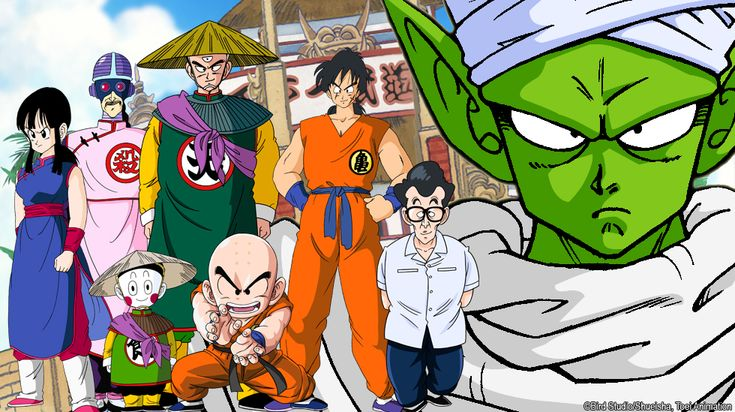
Goku y sus amigos se preparan para el 23 Torneo de Artes Marciales, donde nuevos y viejos rivales se enfrentaran en combates epicos.
Ver mas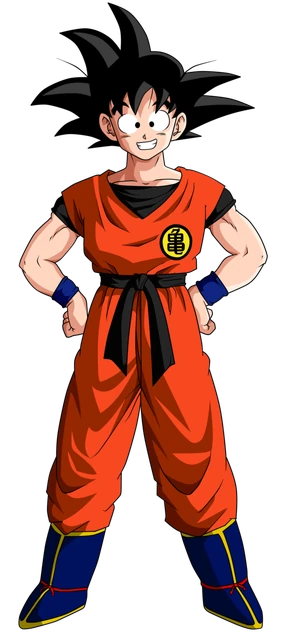

Goku descubre su verdadero origen y se enfrenta junto a sus amigos a Raditz, Nappa y Vegeta.
Ver mas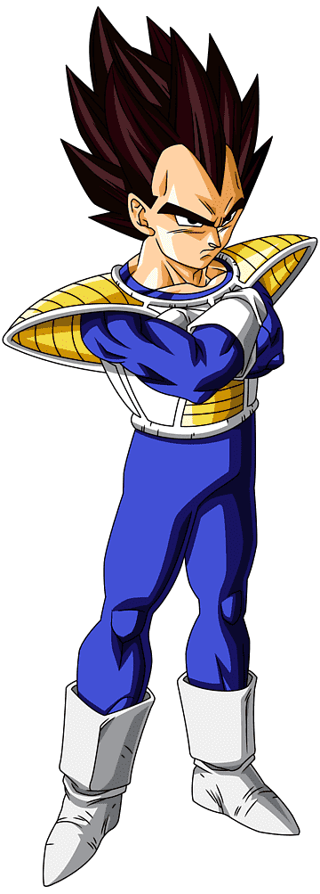
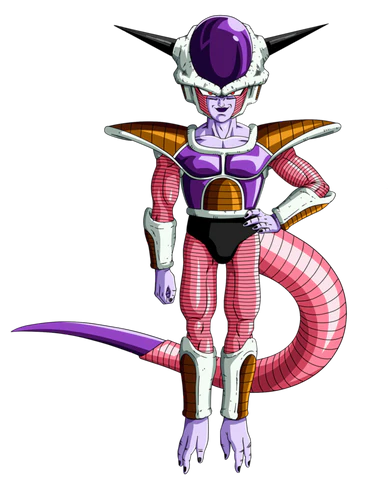
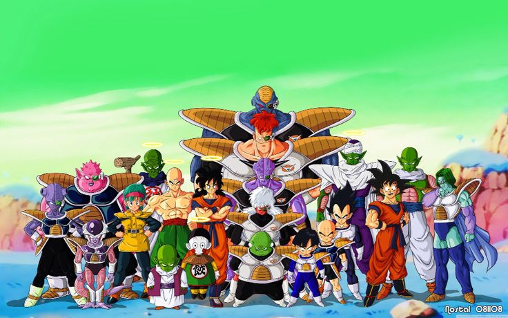
Los Guerreros Z viajan a Namek, enfrentan a las Fuerzas Especiales Ginyu y a Freezer en su forma final.
Ver mas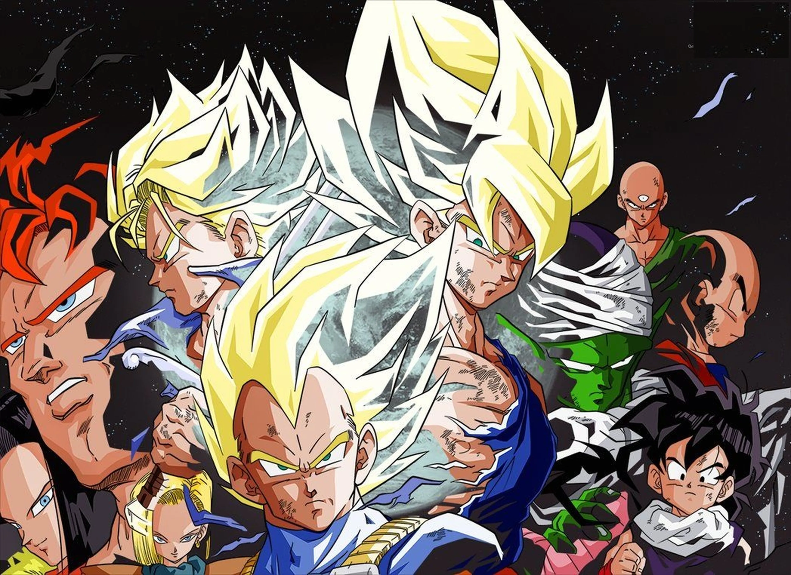
Trunks viaja del futuro, aparecen los androides #17 y #18 y Cell evoluciona hasta su forma perfecta.
Ver mas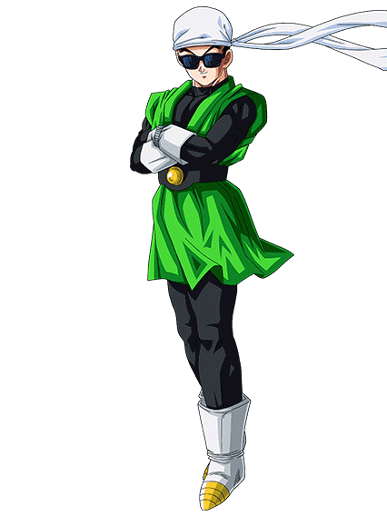
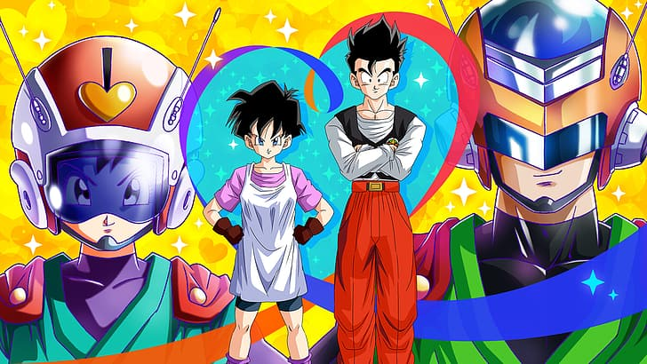
Gohan entra al instituto y oculta su identidad como heroe con un traje especial: el Gran Saiyaman.
Ver mas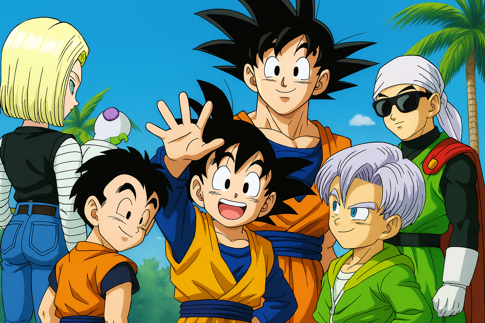
Los guerreros se reunen para competir y se presentan nuevas amenazas como Spopovich y Yamu.
Ver mas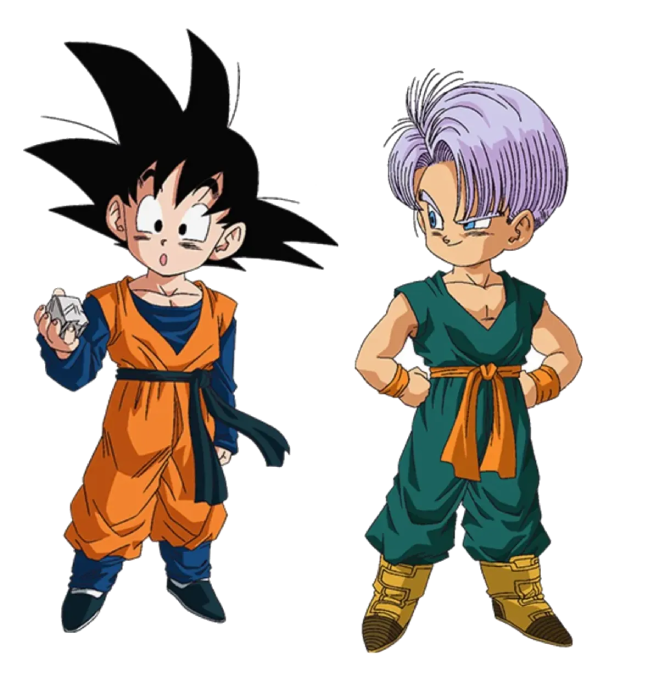
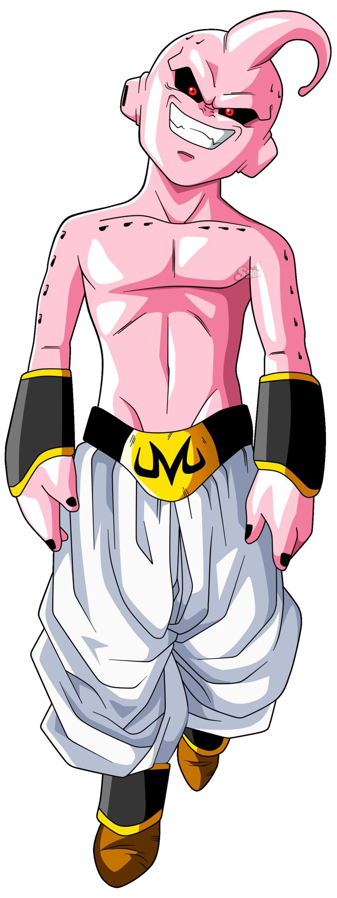
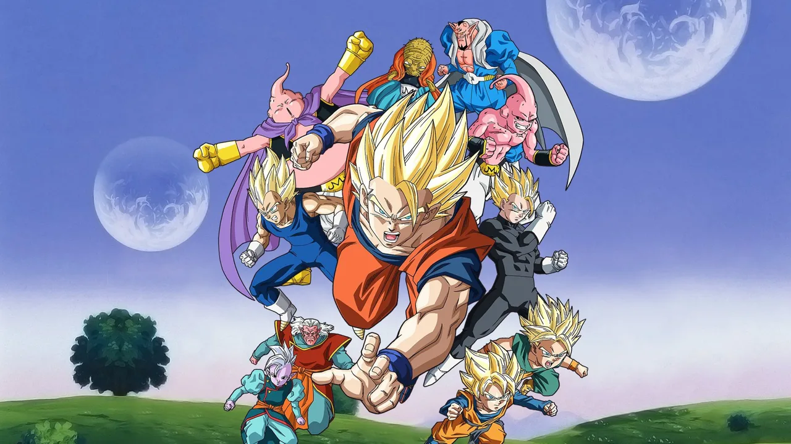
Majin Buu amenaza al universo. Aparecen Gotenks, Vegetto y se libran batallas epicas contra Kid Buu.
Ver mas